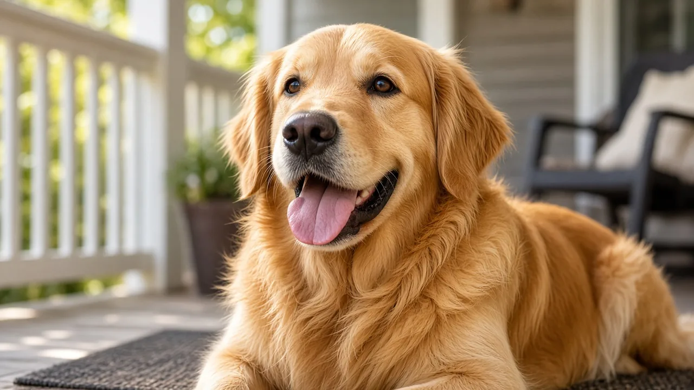

Why do dogs pant? It is how they cool down
Dogs pant to move air across the moist surfaces of the tongue, mouth and upper airway so heat can leave the body as water evaporates. They have sweat glands in the paw pads, but those glands are not enough to cool a whole dog the way human skin sweat does. Panting after play or on a warm day is often normal. Heavy, noisy panting with thick drool, weakness or collapse is a heatstroke emergency.

Panting is evaporative cooling
When a dog pants, air flows over wet tissues in the mouth and throat. Evaporation takes heat with it. That is why a dog that has been running on a cool day may pant hard for a few minutes, then settle once body temperature drops. The American Kennel Club explains panting as the main way dogs regulate temperature, and the RSPCA treats heavy panting as an early heatstroke warning when it comes with other signs (see our hot weather advice).
Can dogs sweat?
Dogs have sweat glands concentrated in the paw pads. Those glands help a little with cooling and leave damp prints on hot pavement, but they do not replace panting. If someone asks "can dogs sweat?", the accurate short answer is: a little through the paws, not enough to cool the body the way people do. Relying on shade, water and rest still matters more than any paw sweat.
Normal panting vs heatstroke
Normal panting often follows exercise, excitement or a warm room, and slows when the dog rests in a cooler place with water available. The RSPCA lists heatstroke risk especially for flat faced (brachycephalic) breeds, thick coated dogs, puppies, older dogs and dogs with breathing problems. Warning signs include heavy or noisy panting, thick drooling, red gums and tongue, weakness, confusion, vomiting or diarrhea, muscle spasms, seizures and collapse. Cool the dog with lukewarm water and air flow, then get veterinary help. Do not use ice water baths that can shock circulation.
- After play: expect panting; offer water and a rest stop.
- In a hot car or sun: never leave a dog; cabin heat rises fast.
- Flat faced breeds: shorter airways make panting less efficient; keep walks cooler.
Other reasons dogs pant
Panting is also a stress signal when it comes with lip licking, a tucked tail or a lowered body (see reading stress). Pain, fever, heart or lung disease, and some medicines can raise panting too. If panting starts suddenly at rest, or seems out of proportion to heat and exercise, contact your vet (see health basics).
Practical takeaways
- Panting cools dogs; paw sweat is minor.
- Match activity to temperature and breed risk.
- Know the heatstroke list and act early.
Frequently asked questions
Why do dogs pant?
Panting moves air over moist mouth and airway surfaces so evaporation can remove heat. It is the main cooling method dogs use.
Can dogs sweat to cool down?
Dogs have sweat glands mainly in the paw pads. That helps a little, but it is not enough to cool the whole body. Panting does the real work.
Is panting after a walk normal?
Yes when it slows with rest, water and cooler air. If panting stays heavy with thick drool, red gums, weakness or collapse, treat it as possible heatstroke and contact a vet.
Which dogs overheat fastest?
The RSPCA flags flat faced breeds, thick coats, puppies, seniors and dogs with breathing disease as higher risk.
Can stress make a dog pant?
Yes. Panting with other stress signals such as lip licking or a tucked tail can mean the dog needs space, a quieter setting or veterinary advice if it is sudden and unexplained.
Sources
- Heatstroke in dogs, RSPCA
- Why Do Dogs Pant?, American Kennel Club
- Normal Physiological Values for Dogs, Merck Veterinary Manual
General education only, not veterinary advice. If you are worried about your dog, contact your vet; in an emergency, contact an emergency vet straight away.